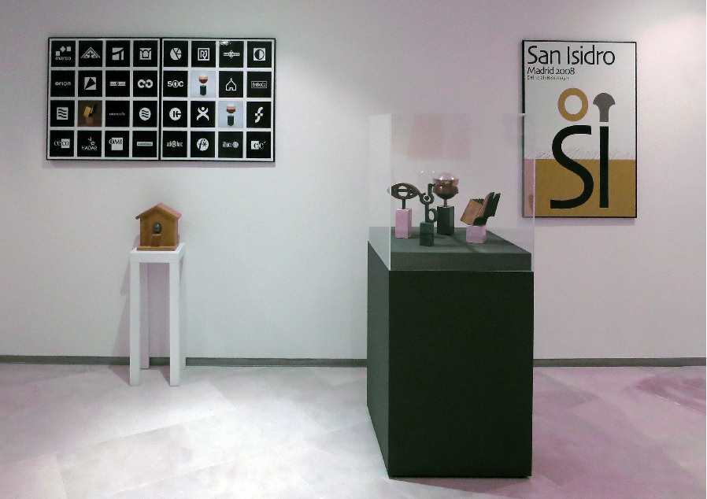

Exposición "Vivir dos veces"
El Centro e-LEA ‘Miguel Delibes’ abre sus puertas a una retrospectiva del trabajo de la diseñadora gráfica Miryam Anllo Vento,
titulada Vivir dos veces. Pretende ser «un homenaje» a sus casi cuarenta años de profesión.

Vivir dos veces está dividida en cinco secciones: Carteles, Logotipos, Esculturas, Vinos y Premios, en las que el espectador podrá adentrarse en la personalidad y la mirada de esta mujer «simbólica» que siempre ha intentado que su trabajo, tanto como diseñadora como artista, esté impregnado de poesía.